php是世界上最自由的语言
php学习的必要准备工作
- 在php学习中，需要准备两样软件。
阿帕奇（apache）和mysql。
这两搭建环境非常麻烦，所以我建议先学习他们的搭建过程，然后直接下载phpstudy集成环境。
一定要先学习搭建过程，毕竟世界上最恐怖的事就是拿到了傻瓜版操作软件却不会用。
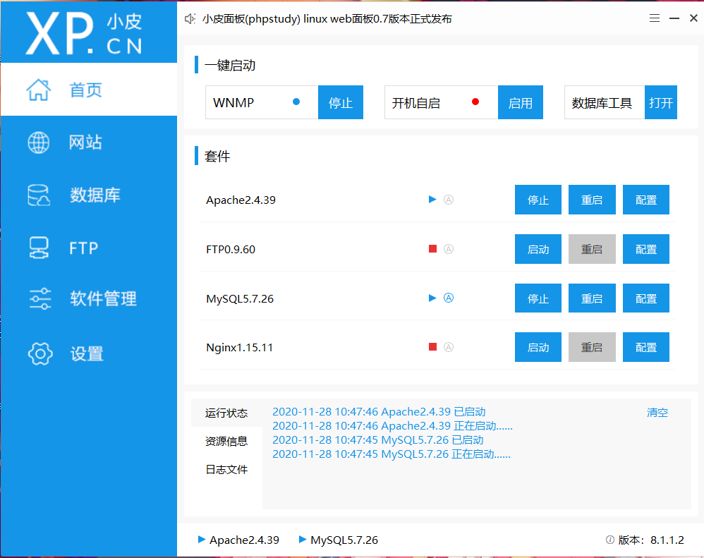
php基础之常量和变量
php语法和标记符
标记和注释
标记：现在通用为’<?php? >’其他不做说明。
注释：php语言可用大部分语言的注释格式进行注释
如/../,#,//等都可以使用。php语法格式
php语言以<?php做开头，以？>结尾。
php变量用$表示，$后内容可以自行定义，但不能以数字开头
php同c语言一般,每句代码后都需要用”;”作为结束，相对的，我们可以省略用与结尾的？>。
例如：
<？php
$name=”mujie”;
echo $name;
？>
此代码会在网页输出mujie。php替代语法
php对分支结构和循环结构均提供了替代语法
全部对应一个模式
例如：
for(str1;str2;str3){
内容；
}
可以将花括号替代为：
for(str1;str2;str3):
内容；
endfor;
php变量
- 变量的概念
变量来源于数学，是计算机中储存结果和表示值的抽象概念，变量是可变的。
- 变量的使用
在系统中增加变量的名字并给变量赋值。
变量使用$开头
格式：$[变量名]=”[赋值内容]”;
变量名的第一个字符不能是数字。 - 预定义变量
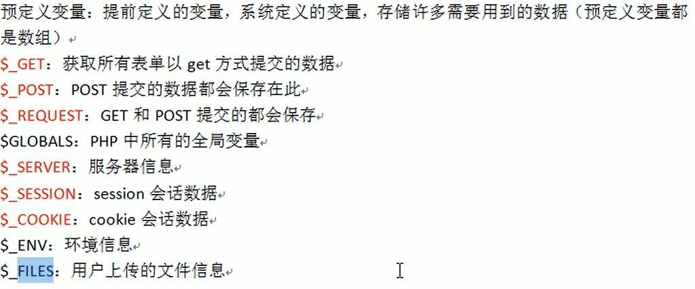 - 可变变量
如果一个变量的值是另一个变量的名字，就会输出另一个变量
可变变量用$$引用。
相当于连续赋值。
例如：
$a=b;
$b=1234;
echo $$a;
输出结果是1234. - 变量传值
值传递：
值传递是将一个变量的值“复制”给另一个变量，虽然值一样，但变量的储存区间不同，所以两者没有影响。
例如：
$a=1;
$b=$a;
就属于值传递。
引用传递和值传递的区别是引用前后的变量值都存储在同一个位置中。
引用传递用&表示
例如：
$a=123;
$b=&$a;
便是把a的值引用给b。
注：当程序运行完毕后，变量会被删除，如果不想变量被删除，需要写入域[后面会说到]。
php常量
常量的定义
常量是在运行中不可改变的量。
在PHP 5.3.0 之后的版本中，你可以用 define() 函数，或
const两种方法来定义一个常量。函数 define() 允许将常量定义为一个表达式，而const关键字有一些限制，一个常量一旦被定义，就不能再改变或者取消定义。使用
const关键字定义常量时，PHP 5.6 之前只能包含标量数据（boolean，integer，float 和 string）。从 PHP 5.6 开始，可以将常量定义为一个表达式，也可以定义为一个 array。还可以定义 resource 为常量，但应尽量避免，因为可能会造成不可预料的结果。常量的使用形式
在php5.3后，常量有两中定义方式
1- 使用函数define
格式：define(“常量名”，常量值);2- const 常量名=值;
通常用大写字母定义。3- constant 针对有特殊名字的常量(名字以数字开头，或有-之类不合法字符的常量)
格式：constant(“常量名”);系统常量
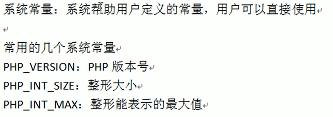魔术常量
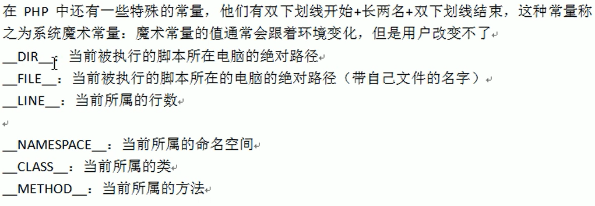
类
类是面向对象的过程
- class
在php中，可以使用class定义类
一个类可以包含有属于自己的 常量，变量（称为“属性”）以及函数（称为“方法”）语法：
[修饰关键字] class [类名] {
类的属性和方法
}
类的调用
方法的调用
当一个方法在类定义内部被调用时，有一个可用的伪变量 $this。
$this 是一个到当前对象的引用。
以静态方式去调用静态方法时将会抛出一个Error
self 与 $this
1.self代表类，$this代表对象
2.能用$this的地方一定使用self，能用self的地方不一定能用$this
静态的方法中不能使用$this，静态方法给类访问的。3、$this是实例化对象的指针，self是对象的指针。
!!!!!!!!本质都是指针
self调用的类的指针，而非实例化后的对象指针，静态变量和静态方法始终属于类，而非属于实例化后的对象，因此在静态方法中无法使用$this，因为此时所处的位置是类所在的指针，只能使用self调用静态方法或者静态变量。
<?php class demo { public $a; public $b; public static $c = 100; public function __construct($a) { $this->a = $a; $this->funct(); } public static function func() { $newObj = new self(20); $newObj->funct(); self::$c += 100; echo self::$c; } private function funct() { $this->b = $this->a * 200; } public function getC() { echo self::$c; } } $demo = new demo(3); $demo::func(); $demo::getC(); $demo2 = new demo(4); $demo2::func(); $demo::getC(); $demo2::getC(); $demo->getC();

关键字:
关键字不能修饰成员属性，只能修饰类和方法
abstract 译为：摘要
抽象类或方法，被修饰为抽象类之后，类将不能被实例化，但可以被继承。
如果类中有至少一个方法被声明为抽象的，那么这个类也必须声明为抽象的。继承一个抽象类的时候，子类必须重新定义父类中的所有抽象方法，而且这些方法的访问控制必须和父类中一样。属性无法抽象
final 译为： 最终的
定义一个不能被继承的类
属性和方法：
概述：
类的属性和方法存在于不同的“命名空间”中，这意味着同一个类的属性和方法可以使用同样的名字。在类中访问属性和调用方法使用同样的操作符。
具体是访问一个属性还是调用一个方法，取决于你的上下文，即用法是变量访问还是函数调用。
<?php class Foo { public $bar = 'property'; public function bar() { return 'method'; } } $obj = new Foo(); echo $obj->bar, PHP_EOL, $obj->bar(), PHP_EOL;//使用$obj->bar,定位类中具体的属性或方法1、成员属性就是对该类定义的一些变量属性
2、类中声明成员属性要使用关键字
常见成员属性声明是由关以下键字
public，var，protected，private开头的，然后跟一个变量来组成的。还有一些成员属性包括，静态static,常量const.
属性关键字
public 译为：公众的
- 从PHP5.0版本开始，对象声明时需要声明对象属性和方法的可见性，public关键字表示属性或方法是公开可见的。
- 在PHP5.0之前未支持对象属性和方法的可见性定义，默认所有的属性和方法都是公开可见的
- 类的内外都可以调用
protected 译为：受保护的
- 类内和派生类能用，类外不能用
private 译为：私有的
- 私有的，定义只能类内使用的变量
static 译为：静止的
- 用static修饰的成员属性可以被同一个类的所有对象共享
- 用法同php的域，可保留程序运行后变量的值
const 译为：常量
- 在类的声明中常量必须使用const
//代码示例 <?php /** * Define MyClass */ class MyClass { public $public = 'Public'; protected $protected = 'Protected'; private $private = 'Private'; function printHello() { echo $this->public; echo $this->protected; echo $this->private; } } $obj = new MyClass(); echo $obj->public; // 这行能被正常执行 echo $obj->protected; // 这行会产生一个致命错误 echo $obj->private; // 这行也会产生一个致命错误 $obj->printHello(); // 输出 Public、Protected 和 Private /** * Define MyClass2 */ class MyClass2 extends MyClass { // 可以对 public 和 protected 进行重定义，但 private 而不能 public $public = 'Public2'; protected $protected = 'Protected2'; function printHello() { echo $this->public; echo $this->protected; echo $this->private; } } $obj2 = new MyClass2(); echo $obj2->public; // 这行能被正常执行 echo $obj2->protected; // 这行会产生一个致命错误 echo $obj2->private; // 未定义 private $obj2->printHello(); // 输出 Public、Protected2 和 Undefined ?>
类常量：
可以把在类中始终保持不变的值定义为常量。在定义和使用常量的时候不需要使用 $ 符号。
常量的值必须是一个定值，不能是变量，类属性，数学运算的结果或函数调用。
接口（interface）中也可以定义常量。
自 PHP 5.3.0 起，可以用一个变量来动态调用类。但该变量的值不能为关键字（如
self，parent或static）。
类常量的定义：
类常量用const 定义
类常量使用：：号调用
<?php class MyClass { const constant = 'constant value'; function showConstant() { echo self::constant . "\n"; } } echo MyClass::constant . "\n"; $classname = "MyClass"; echo $classname::constant . "\n"; // 自 5.3.0 起 $class = new MyClass(); $class->showConstant(); echo $class::constant."\n"; // 自 PHP 5.3.0 起 ?>
接口：
使用接口（interface），可以指定某个类必须实现哪些方法，但不需要定义这些方法的具体内容。
接口是通过
interface关键字来定义的，就像定义一个标准的类一样，但其中定义所有的方法都是空的。接口中定义的所有方法都必须是公有，这是接口的特性。
在接口中定义一个构造方法是被允许的。
<?php interface kou { public function a(); public function b();//接口所有的方法都为空 } class jie implements kou//类中必须实现所有的接口 { public $a = 1; public function a() { $this->a = 2; echo $this->a; } public function b() { $this->a =3; echo $this->a; } } $b = new jie(); echo $b->a(); echo "\t"; echo $b->b(); ?>
接口的扩充
接口可以继承，所以可以使用继承的方法扩充接口
<?php interface a { public function foo(); } interface b extends a { public function baz(Baz $baz); } interface c extends a, b//继承多个接口 { public function baz(); } // 正确写法 class c implements b { public function foo() { } public function baz(Baz $baz) { } } // 错误写法会导致一个致命错误 class d implements b { public function foo() { } public function baz(Foo $foo) { } } ?>
接口常量
<?php interface a { const b = 'Interface constant'; } // 输出接口常量 echo a::b; // 错误写法，因为常量不能被覆盖。接口常量的概念和类常量是一样的。 class b implements a { const b = 'Class constant'; } ?>接口常量和类常量无本质的不同
实现
要实现一个接口，使用
implements（实施） 操作符。类中必须实现接口中定义的所有方法，否则会报一个致命错误。类可以实现多个接口，用逗号来分隔多个接口的名称。接口也可以继承，通过使用 extends 操作符。
类要实现接口，必须使用和接口中所定义的方法完全一致的方式。否则会导致致命错误。
接口中也可以定义常量。接口常量和类常量的使用完全相同，但是不能被子类或子接口所覆盖。
类的自动加载
sql_autoload_register()函数可实现自定义加载
英译：autoload:自动加载 register:登记
spl_autoload_register() 函数可以注册任意数量的自动加载器，当使用尚未被定义的类（class）和接口（interface）时自动去加载。
<?php spl_autoload_register(function ($class_name) { require_once $class_name . '.php'; }); $obj = new MyClass1(); $obj2 = new MyClass2(); ?>spl_autoload_register(function ($name){ if (preg_match('/Controller$/', $name)) { $name = "controllers/${name}"; } else if (preg_match('/Model$/', $name)) { $name = "models/${name}"; } include_once "${name}.php"; });
重载
重载（overloading）是指动态地创建类属性和方法,通过魔术方法实现
所有的重载方法都必须被声明为
public。简单理解为调用魔术函数
遍历对象
foreach()语句用于遍历对象
foreach（遍历）仅能够应用于数组和对象，如果尝试应用于其他数据类型的变量，或者未初始化的变量将发出错误信息。有两种语法：foreach (iterable_expression(可迭代的表达式) as $value) statement（说明） //遍历给定的 iterable_expression 迭代器。每次循环中，当前单元的值被赋给 $value。 foreach (iterable_expression as $key => $value) statement //第二种格式做同样的事，只除了当前单元的键名也会在每次循环中被赋给变量 $key。
自定义遍历对象
通过加上 & 来修改数组的元素。将以引用赋值而不是拷贝一个值。
同指针的概念，修改引用值原值同样改变
<?php $arr = array(1, 2, 3, 4); foreach ($arr as &$value) { $value = $value * 2; } // $arr is now array(2, 4, 6, 8) unset($value); // 最后取消掉引用 ?> //数组最后一个元素的 $value 引用在 foreach 循环之后仍会保留。建议使用 unset() 来将其销毁
foreach不支持用 “@” 来抑制错误信息的能力。
用 list() 给嵌套的数组解包
<?php $array = [ [1, 2],//定义多个数组 [3, 4], ]; foreach ($array as list($a, $b)) { //使用list（）函数可以解开多个定义的函数，分别赋值给$a,$b // $a contains the first element of the nested array, // and $b contains the second element. echo "A: $a; B: $b\n"; } ?> //结果： //A: 1; B: 2 //A: 3; B: 4list() 中的单元可以少于嵌套数组的，此时多出来的数组单元将被忽略：
抽象类：
任何一个类，如果它里面至少有一个方法是被声明为抽象的，那么这个类就必须被声明为抽象的。
继承一个抽象类的时候，子类必须定义父类中的所有抽象方法；
但无需在定义非抽象的方法
属性无法抽象
<?php abstract class chou { public $a = 1; public function b() { $this->a = 2; return $this->a; } } class xaing extends chou{ }//无法直接实例化，但可以继承 $shikl = new xaing(); echo $shikl->a; echo "\t"; echo $shikl->b(); ?> //输出结果：1 2
访问控制:
对属性或方法的访问控制（PHP 7.1.0 以后支持常量），是通过在前面添加关键字 public（公有），protected（受保护）或 private（私有）来实现的。被定义为公有的类成员可以在任何地方被访问。被定义为受保护的类成员则可以被其自身以及其子类和父类访问。被定义为私有的类成员则只能被其定义所在的类访问。
类属性必须定义为公有，受保护，私有之一。如果用 var(变量)或没有设置关键字，则被视为公有。
类的继承
extends 译为：延伸
将父类的属性和方法继承给子类，子类可以重新对父类的方法进行定义和添加
限制：
可重新定义public属性和protected属性，不能重新定义private属性
//代码示例
<?php
/**
* Define MyClass
*/
class MyClass
{
// 声明一个公有的构造函数
public function __construct() { }
// 声明一个公有的方法
public function MyPublic() { }
// 声明一个受保护的方法
protected function MyProtected() { }
// 声明一个私有的方法
private function MyPrivate() { }
// 此方法为公有
function Foo()
{
$this->MyPublic();
$this->MyProtected();
$this->MyPrivate();
}
}
$myclass = new MyClass;
$myclass->MyPublic(); // 这行能被正常执行
$myclass->MyProtected(); // 这行会产生一个致命错误
$myclass->MyPrivate(); // 这行会产生一个致命错误
$myclass->Foo(); // 公有，受保护，私有都可以执行
/**
* Define MyClass2
*/
class MyClass2 extends MyClass
{
// 此方法为公有
function Foo2()
{
$this->MyPublic();
$this->MyProtected();
$this->MyPrivate(); // 这行会产生一个致命错误
}
}
$myclass2 = new MyClass2;
$myclass2->MyPublic(); // 这行能被正常执行
$myclass2->Foo2(); // 公有的和受保护的都可执行，但私有的不行
class Bar
{
public function test() {
$this->testPrivate();
$this->testPublic();
}
public function testPublic() {
echo "Bar::testPublic\n";
}
private function testPrivate() {
echo "Bar::testPrivate\n";
}
}
class Foo extends Bar
{
public function testPublic() {
echo "Foo::testPublic\n";
}
private function testPrivate() {
echo "Foo::testPrivate\n";
}
}
$myFoo = new foo();
$myFoo->test(); // Bar::testPrivate
// Foo::testPublic
?>
常量的控制访问
PHP 7.1.0 开始，类的常量可以定义为公有、私有或受保护。如果没有设置这些关键字，则该常量默认为公有。
//代码示例
<?php
/**
* Define MyClass
*/
class MyClass
{
// 公有常量
public const MY_PUBLIC = 'public';
// 受保护的常量
protected const MY_PROTECTED = 'protected';
// 私有常量
private const MY_PRIVATE = 'private';
public function foo()
{
echo self::MY_PUBLIC;
echo self::MY_PROTECTED;
echo self::MY_PRIVATE;
}
}
$myclass = new MyClass();
MyClass::MY_PUBLIC; // 这行可以正常执行
MyClass::MY_PROTECTED; // 这行会产生一个致命错误
MyClass::MY_PRIVATE; // 这行会产生一个致命错误
$myclass->foo(); // 将会输出：Public Protected Private
/**
* Define MyClass2
*/
class MyClass2 extends MyClass
{
// This is public
function foo2()
{
echo self::MY_PUBLIC;
echo self::MY_PROTECTED;
echo self::MY_PRIVATE; // 这行会产生一个致命错误
}
}
$myclass2 = new MyClass2;
echo MyClass2::MY_PUBLIC; // 这行可以正常执行
$myclass2->foo2(); // 将会输出：Public Protected，MY_PRIVATE 是私有常量，无法输出
?>
其他对象的访问控制
同一个类的对象即使不是同一个实例也可以互相访问对方的私有与受保护成员。这是由于在这些对象的内部具体实现的细节都是已知的。
简单理解就是类里可以调用此类的私有对象和受保护对象，因为对象本身就在类里。
<?php
class Test
{
private $foo;
public function __construct($foo)
{
$this->foo = $foo;
}
private function bar()
{
echo 'Accessed the private method.';
}
public function baz(Test $other)
{
// We can change the private property:
$other->foo = 'hello';
var_dump($other->foo);
// We can also call the private method:
$other->bar();
}
}
$test = new Test('test');
$test->baz(new Test('other'));
?>
范围解析操作符 ::
范围解析操作符（也可称作 Paamayim Nekudotayim）或者更简单地说是一对冒号，可以用于访问静态成员，类常量，还可以用于覆盖类中的属性和方法。
当在类定义之外引用到这些项目时，要使用类名。
自 PHP 5.3.0 起，可以通过变量来引用类，该变量的值不能是关键字（如
self，parent和static）。self （自己），parent （起源，父本）和 static （静止的，静态）这三个特殊的关键字是用于在类定义的内部对其属性或方法进行访问的。
示例：在外部引用项目：
<?php class MyClass { const CONST_VALUE = 'A constant value'; } $classname = 'MyClass'; echo $classname::CONST_VALUE; // 自 PHP 5.3.0 起 echo MyClass::CONST_VALUE; ?>
示例：在内部引用项目：
<?php class OtherClass extends MyClass { public static $my_static = 'static var'; public static function doubleColon() { echo parent::CONST_VALUE . "\n"; //引用父类方法使用parent::静态名 echo self::$my_static . "\n";//引用本类方法使用self::静态名 } } $classname = 'OtherClass'; echo $classname::doubleColon(); // 自 PHP 5.3.0 起 OtherClass::doubleColon(); ?>
当一个子类覆盖其父类中的方法时，PHP 不会调用父类中已被覆盖的方法。是否调用父类的方法取决于子类。这种机制也作用于构造函数和析构函数，重载以及魔术方法。
<?php class MyClass { protected function myFunc() { echo "MyClass::myFunc()\n"; } } class OtherClass extends MyClass { // 覆盖了父类的定义 public function myFunc() { // 但还是可以调用父类中被覆盖的方法 parent::myFunc(); echo "OtherClass::myFunc()\n"; } } $class = new OtherClass(); $class->myFunc(); ?>
静态关键字static
声明类属性或方法为静态，就可以不实例化类而直接访问。静态属性不能通过一个类已实例化的对象来访问（但静态方法可以）。
由于静态方法不需要通过对象即可调用，所以伪变量 $this 在静态方法中不可用。
<?php class Foo { public static function aStaticMethod() { // ... } } Foo::aStaticMethod();//无需实例化类就可以调用 $classname = 'Foo'; $classname::aStaticMethod();//这里其实还是Foo::aStaticMethod();不过是把Foo给了$classname，耍了个小花招罢了 ?>
静态属性
静态属性不可以由对象通过 -> 操作符来访问。 //简单说 ：：访问静态，->访问动态
trait[特质]方法
tarit 是php实现继承和调用的快速简洁的方法
和类相似，但无法实例化。
与使用数据库一样，使用use调用
优先级：
从基类继承的成员会被 trait 插入的成员所覆盖。优先顺序是来自当前类的成员覆盖了 trait 的方法，而 trait 则覆盖了被继承的方法。
简单说既是：当前类 > trait > 被继承的父类
<?php class Base { public function sayHello() { echo 'Hello '; } }//这是一个父类 trait SayWorld { public function sayHello() { parent::sayHello();//父类的Hello 被trait覆盖，所以使用parent:: 重新调用出来 //这里sayHello并没有变量，看作静态处理使用:: echo 'World!'; //覆盖父类 } }//这是一个trait class MyHelloWorld extends Base { //继承父类Base use SayWorld; //调用trait Sayworld //这里使用trait可以一次性调用许多的“类”，而不用一步步的继承 } $o = new MyHelloWorld(); $o->sayHello(); ?> //以上会输出Hello World! //另一个例子 <?php trait HelloWorld { public function sayHello() { echo 'Hello World!'; } } class TheWorldIsNotEnough { use HelloWorld;//调用trait public function sayHello() { echo 'Hello Universe!'; }//本类优先级高于trait，覆盖调用的trait } $o = new TheWorldIsNotEnough(); $o->sayHello(); ?> //结果为：Hello Universe!
调用多个trait
使用逗号，即可调用多个trait
<?php trait Hello { public function sayHello() { echo 'Hello '; } } trait World { public function sayWorld() { echo 'World'; } } class MyHelloWorld { use Hello, World; public function sayExclamationMark() { echo '!'; } } $o = new MyHelloWorld(); $o->sayHello(); $o->sayWorld(); $o->sayExclamationMark(); ?> //以上会输出 Hello World!
trait同名冲突解决方法
如果两个 trait 都插入了一个同名的方法，如果没有明确解决冲突将会产生一个致命错误。
为了解决多个 trait 在同一个类中的命名冲突，需要使用
insteadof（代替） 操作符来明确指定使用冲突方法中的哪一个。以上方式仅允许排除掉其它方法，
as操作符可以 为某个方法引入别名。 注意，as操作符不会对方法进行重命名，也不会影响其方法。<?php trait A { public function smallTalk() { echo 'a'; } public function bigTalk() { echo 'A'; } } trait B { public function smallTalk() { echo 'b'; } public function bigTalk() { echo 'B'; } } class Talker { use A, B { B::smallTalk insteadof A;//以B中的smallTalk代替A中的smallTalk(两个同名方法优先B) A::bigTalk insteadof B;//将A中的bigTalk代替B中的bigTalk(优先A) } } $a = new Talker; echo $a->smallTalk();//说明smallTalk优先级 echo $a->bigTalk();//说明bigTalk优先级 echo "\n"; class Aliased_Talker { use A, B { B::smallTalk insteadof A;//以B中的smallTalk代替A中的smallTalk A::bigTalk insteadof B;//将A中的bigTalk代替B中的bigTalk B::bigTalk as talk;//给B中的bigTalk起个别名叫talk } } $b = new Aliased_Talker; echo $b->smallTalk(); echo $b->bigTalk(); echo $b->talk();//说明替代并不是“覆盖，消除”只是定义同名时优先输出的方法 //结果： //bA //bAB ?>
使用as修改类的访问控制
<?php trait HelloWorld { public function sayHello() { echo 'Hello World!'; } } // 修改 sayHello 的访问控制 class MyClass1 { use HelloWorld { sayHello as protected; }//格式为{内容}，将sayHello 改为protected属性 } // 给方法一个改变了访问控制的别名 // 原版 sayHello 的访问控制则没有发生变化 class MyClass2 { use HelloWorld { sayHello as private Hello; }//改为private属性，并起别名为Hello } ?>
从 trait 来组成 trait
正如 class 能够使用 trait 一样，其它 trait 也能够使用 trait。在 trait 定义时通过使用一个或多个 trait，能够组合其它 trait 中的部分或全部成员
<?php trait Hello { public function sayHello() { echo 'Hello '; } } trait World { public function sayWorld() { echo 'World!'; } } trait HelloWorld { use Hello, World; //调用上面的trait } class MyHelloWorld { use HelloWorld; } $o = new MyHelloWorld(); $o->sayHello(); $o->sayWorld(); ?> //输出结果为：Hello World！
对象序列化
所有php里面的值都可以使用函数serialize()来返回一个包含字节流的字符串来表示。unserialize()函数能够重新把字符串变回php原来的值。 序列化一个对象将会保存对象的所有变量，但是不会保存对象的方法，只会保存类的名字。
为了能够unserialize()一个对象，这个对象的类必须已经定义过。如果序列化类A的一个对象，将会返回一个跟类A相关，而且包含了对象所有变量值的字符串。 如果要想在另外一个文件中反序列化一个对象，这个对象的类必须在反序列化之前定义，可以通过包含一个定义该类的文件或使用函数spl_autoload_register()来实现。
<?php // classa.inc: class A { public $one = 1; public function show_one() { echo $this->one; } } // page1.php: include("classa.inc"); $a = new A; $s = serialize($a); // 把变量$s保存起来以便文件page2.php能够读到 file_put_contents('store', $s); // page2.php: // 要正确反序列化，必须包含下面一个文件 include("classa.inc"); $s = file_get_contents('store'); $a = unserialize($s); // 现在可以使用对象$a里面的函数 show_one() $a->show_one();//无需实例化 ?>
匿名类：
PHP从7开始支持匿名类，通常匿名类用来创建一次性的简单对象，匿名类可以继承其他类、实现接口、使用trait，还可以向其构造函数传递参数。
匿名类无需设置类名
注意，匿名类的名称是通过引擎赋予的，如下例所示。 由于实现的细节，不应该去依赖这个类名。
<?php $class = new class { public $c; public function A() { $this->c = 2; return $this->c; } };//直接实例化一个不知名的类 echo $class->A();//输出类的函数 ?> //结果为 2匿名类可以直接使用，用后即焚
<?php var_dump(new class { public function log($msg) { echo $msg; } }); ?> //输出结果 //object(class@anonymous)#1 (0) { //}
匿名类的嵌套:
匿名类被嵌套进普通 Class 后，不能访问这个外部类（Outer class）的 private（私有）、protected（受保护）方法或者属性。 为了访问外部类（Outer class）protected 属性或方法，匿名类可以 extend（扩展）此外部类。 为了使用外部类（Outer class）的 private 属性，必须通过构造器传进来：
<?php class niming { protected $b = 100; //public $a; //public function A() //{ // $this->a = 1; // $this->b = $this->a + 1; // return $this->b; //} public function B() { return new class extends niming{ //嵌套一个匿名类 public function C() { return $this->b; // 返回$b的值 //如果成功访问到$b = 100 输出100 //否则无输出值 } }; } } echo (new niming())->B()->C(); //使用extends继承niming类时，结果为100 //不继承输出为空 ?>
类的实例化
实例化对象 new
关键字new用于将类实例化成为对象
语法：$a = new [类的名字] (参数数列表);
如果不需为对象传递参数，可以只写名字
<?php $instance = new SimpleClass(); // 也可以这样做： $className = 'SimpleClass'; $instance = new $className(); // new SimpleClass() ?>
public的变量可以如果没有static是可以实例化调用的调用，如果有static，就不能实例化调用。
调用静态的属性和方法：
正确做法
<?php class myclass{ public static $name="amos"; } class myclass1{ public $mingzi="amos"; } echo myclass::$name; $p2=new myclass1(); echo $p2->mingzi; ?>错误的写法：
<?php class myclass{ public static $name="amos"; } class myclass1{ public $mingzi="amos"; } $p1=new myclass(); echo $p1->name; echo myclass1::$mingzi; ?>简单来说，非静态属性和方法先实例化类，在使用->调用，语法[实例化变量]->[要调用的属性或方法]；
静态属性和方法则使用双冒号调用，语法：[类名]::[要调用的静态属性或方法]
get_class 译为：获取类
用于返回类的名称
语法：
get_class(object $object=?):字符串
获取给定类的名称object。
object被测对象。在类内部时，可以省略此参数。
如果在一个类里，省略了参数
object， 则返回当前所在类的名称。如果
object是命名空间中某个类的实例，则会返回带上命名空间的类名。
命名空间
概述：
命名空间是封装事物的方法
在很多地方都可以见到这种抽象概念。例如，在操作系统中目录用来将相关文件分组，对于目录中的文件来说，它就扮演了命名空间的角色。具体举个例子，文件
foo.txt可以同时在目录/home/greg和/home/other中存在，但在同一个目录中不能存在两个foo.txt文件。另外，在目录/home/greg外访问foo.txt文件时，我们必须将目录名以及目录分隔符放在文件名之前得到/home/greg/foo.txt。这个原理应用到程序设计领域就是命名空间的概念。
在 PHP 中，命名空间用来解决在编写类库或应用程序时创建可重用的代码如类或函数时碰到的两类问题：
- 用户编写的代码与PHP内部的类/函数/常量或第三方类/函数/常量之间的名字冲突。
- 为很长的标识符名称(通常是为了缓解第一类问题而定义的)创建一个别名（或简短）的名称，提高源代码的可读性。
PHP 命名空间提供了一种将相关的类、函数和常量组合到一起的途径。
定义命名空间
虽然任意合法的 PHP 代码都可以包含在命名空间中，但只有以下类型的代码受命名空间的影响，它们是：类（包括抽象类和 trait）、接口、函数和常量。
命名空间通过关键字
namespace来声明。如果一个文件中包含命名空间，它必须在其它所有代码之前声明命名空间，除了一个以外：declare关键字。
namespace 方法
namespace 译为：命名空间
语法：namespace [空间名称]
在声明命名空间之前唯一合法的代码是用于定义源文件编码方式的
declare语句。另外，所有非 PHP 代码包括空白符都不能出现在命名空间的声明之前：即声明命名空间的语句必须在php代码的第一条
数据类型与逻辑运算
数据类型
数据的分类
数据主要分三大类八小类，值存储数据本身的类型而不是变量类型。
简单基本数据类型[四小类]
1- 整型：
int/integer ，在计算机中占四个字节储存，表示整数类型（前提为整型存的下）。
2- 浮点型：
float/double ，在php中浮点型单双精度是一个概念，两者并无区别，表示小数或整型存不下的数。
3- 字符串型：
string ,同其他语言，php中字符串用引号引起，系统根据实际长度分配存储空间。
4- 布尔型：
bool/boolean ,布尔型只有两个值，ture和false,是最简单的类型。复合数据类型[两小类]
1- 对象类型：
object ,存放对象
2- 数组类型：
array ,一次性存储多个数据特殊类型[两小类]
1- 资源类型：
resource ，存放数据资源（php外部数据，如数据库，文件）
2- 空类型：
NOLL ，只有一个NOLL，不能运算。数据类型的转化
在有些时候需要指定的数据类型，这时需要将数据转化成指定形式
php中类型转化的方式：
1- 自动转化：
常用，效率低。
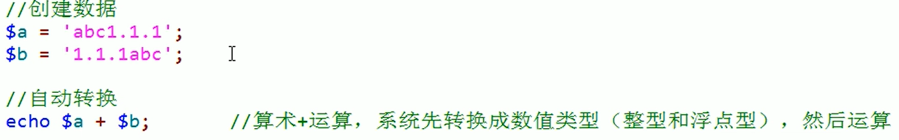如图加法运算不能包括字母，此时系统便会自动转化为整形和浮点型运算
注意：系统会将数字中遇到的第一个小数点当作浮点型转化，后续小数点会被忽略。
2- 强制（手动）转化：
在变量前加上括号，括号中写入数据类型。
NOLL类型比较特殊，转NOLL类型需要用到unset()函数。
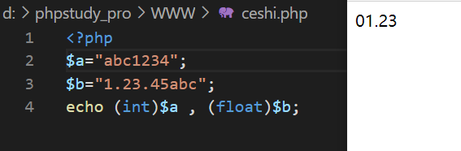数据类型判断
基本作用函数：is_变量名
用与查看的函数：var_dump();
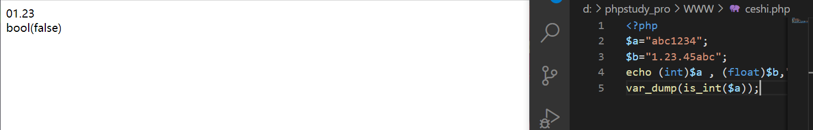
如图，是则输出turn，不是则输出false。设定数据类型：
gettype(变量名);查看当前数据类型。
settype(变量名，类型);设定数据类型（改变数据本身）
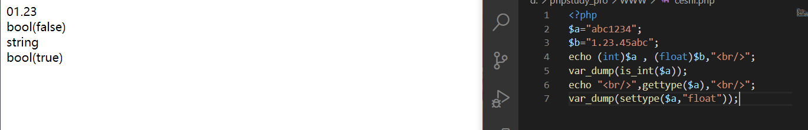
bool(turn)说明转化成功。数据的进制转化
进制表示：
$a=120 //dec（十进制）
$b=0b120 //bin(二进制)
$c=0120 //oct(八进制)
$d=0x120 //hex(十六进制)
注意：php中，所有数都会默认转化为十进制。
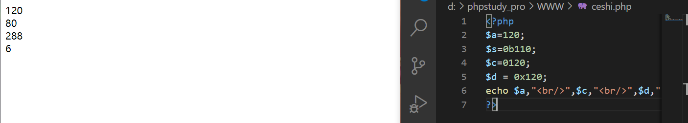进制的手动转化：
函数：[转换前]转换后
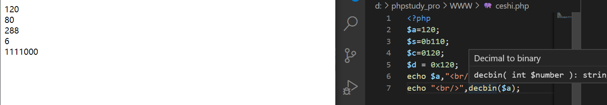浮点型和布尔型的特殊分类：
有小数点默认为浮点型
超过整型存储范围为浮点型
浮点型不精确
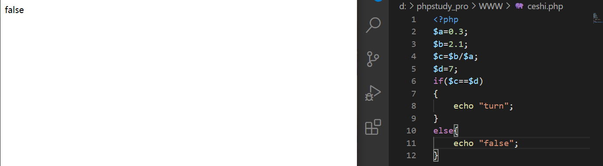两个判断数据存在的函数
1- empty(); 判断数据的值是否为空（不是NOLL），是则返回true，不为空返回false.
2- isset(); 判断数据储存的变量本身是否存在，存在返回true，不存在返回flase。
逻辑运算
运算符
赋值，算数与比较。
php运算符用法同其他语言。
“=”，将左边内容赋值给右边。
“+,-,*,/“,同数学
“%”,取余运算、返回余数。
“<、>、=、!=”，用法同数学。逻辑运算符
与运算：&& 相当与数学的交集，只有同时满足&&两边的条件时返回true，有一个错便是false。
或运算：|| 相当于数学的并集，左右两边任意一个成立便返回true，只有两边同时错误才返回false。
注意：或运算中如果第一个语句为真，便不再执行第二条语句。
非运算：！ 相当与数学的补集，条件为真时返回true，条件为假时返回false。连接运算符
php中语句中间部分用”,”或”.”连接。
错误抑制符
“@”:错误抑制符，php有些错误可以被提前预知但无法避免，这时可以用错误抑制符处理。三目运算符
三目运算符是多个表达式运算的简单分支缩写
语法格式：
表达式1？表达式2：表达式3
运算：如果表达式1成立，运行表达式2，否则运行表达式3。
三目运算符可以多层使用，如：
表达式1？（表达式2？表达式3：表达式4）：（表达式5？表达式6：表达式7）自操作运算符
++
i++在i原来的基础上加一（先赋值再加1）
++i在原来基础上加一（先加1后赋值）
–（与++同理）计算机码
原码、反码与补码
原码是将原本的数按二进制保存在计算机中
例如：%d=4/%d=-4
原码：00001000 10001000 计算机码中第一个字表示正负，0表示正数、1表示负数。反码：
反正是在原码的基础上，正数不变，负数除开头表示正负的1外全部取反。
例如：%d=-4
原码：10001000
反码：11110111补码是在反码的基础上，正数不变，负数加1。
例如：%d=-4
原码：10001000
反码：11110111
补码：11111000位运算符
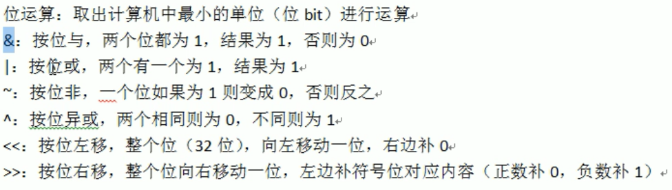运算符优先级
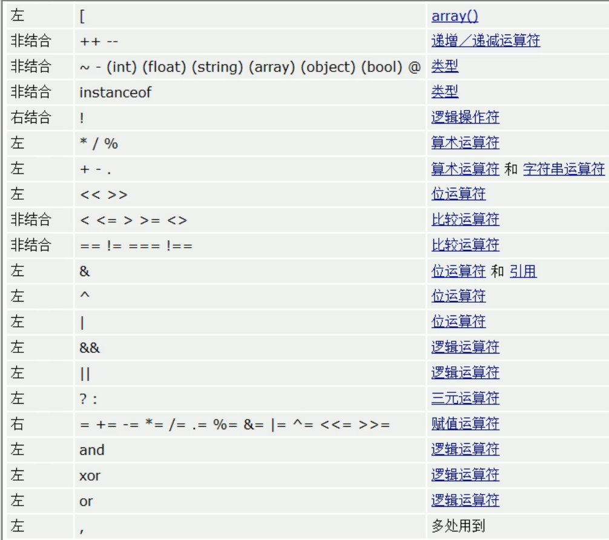如图，优先级自上而下依次降低
结构控制
选择结构控制
if 分支语句
if语句用于条件选择
结构：
if(表达式1)表达式2; //如果表达式1正确执行表达式2else
表达式3; //反之则执行表达式3结构嵌套
if 语句包括大多数结构控制语句都可以结构嵌套（套娃）
如：
if(表达式1)表达式2;else if(表达式3)
表达式4； else whlie{ (表达式5)}
switch分支（转换分支）
在一种情况下有多个值，每个值都有对应不同的代码执行
语句结构：
switch(表达式1)
case 值1;表达式2; //当表达式1的值为值1时，运行表达式2.break; //运行表达式2后结束循环，不再进行后续运算。
case 值2;表达式3; //当表达式1运行结果是值2时，运行表达式3.break;
循环结构控制
for循环
for循环格式
for(条件表达式1;条件表达式2;条件表达式3)
//条件表达式1：定义初始化条件，可以是用逗号分隔的多个语句，但无论是否定义都必须用”;”结束。
//条件表达式2：边界判定，限制循环次数，最后要用”;”结束。
//条件表达式3：执行条件变化，因其是最后一条语句，不需要用”;”结束。whlie循环与do-while循环
while循环：
循环语句：
条件初始化;
while(条件表达式)
{
循环体 //循环条件变化。
}do-while循环
while循环先判断条件表达式，表达式成立才执行，do-while循环先执行循环，再判断表达式是否成立。
循环语句：
do
{
循环体;
}
while(条件表达式);
正则表达式
PCRE(preg)函数
规则正则读取的一类函数，包括查找，替换，匹配等
正则：字符串的匹配规则定界符：正则开始时需写明的字符，常用//也可用||和<>等
原子：最少的一个匹配单位，每个正则都要有一个，写与定界符里
元字符：用于扩展原子的功能，不能单独使用
模式修正符：对整个表达式进行修正，位于定界符外
MySQL数据库的连接
mysql_connect()函数连接数据库
mysql_connect() 函数打开非持久的 MySQL 连接。
mysql_connect(server,user,pwd,newlink,clientflag)
参数 描述 server
服务器可选。规定要连接的服务器。可以包括端口号，例如 “hostname:port”，或者到本地套接字的路径，例如对于 localhost 的 “:/path/to/socket”。如果 PHP 指令 mysql.default_host 未定义（默认情况），则默认值是 ‘localhost:3306’。 user 可选。用户名。默认值是服务器进程所有者的用户名。 pwd 可选。密码。默认值是空密码。 newlink
新建链接可选。如果用同样的参数第二次调用 mysql_connect()，将不会建立新连接，而将返回已经打开的连接标识。参数 new_link 改变此行为并使 mysql_connect() 总是打开新的连接，甚至当 mysql_connect() 曾在前面被用同样的参数调用过。 clientflag
客户端标志可选。client_flags 参数可以是以下常量的组合：MYSQL_CLIENT_SSL - 使用 SSL 加密MYSQL_CLIENT_COMPRESS - 使用压缩协议MYSQL_CLIENT_IGNORE_SPACE - 允许函数名后的间隔MYSQL_CLIENT_INTERACTIVE - 允许关闭连接之前的交互超时非活动时间
mysqli_query()函数执行sql命令
语法：
mysqli_query(connection,query,resultmode);
参数 描述 connection 必需。规定要使用的 MySQL 连接。 query 必需，规定查询字符串（要执行的语句）。 resultmode 可选。一个常量。可以是下列值中的任意一个：MYSQLI_USE_RESULT（如果需要检索大量数据，请使用这个）MYSQLI_STORE_RESULT（默认）
mysql_fetch_array()函数生成关联数组
mysql_fetch_array() 函数从结果集中取得一行作为关联数组，或数字数组，或二者兼有
返回根据从结果集取得的行生成的数组，如果没有更多行则返回 false。
mysql_fetch_array(data,array_type)
参数 描述 data 可选。规定要使用的数据指针。该数据指针是 mysql_query() 函数产生的结果。 array_type 可选。规定返回哪种结果。可能的值：MYSQL_ASSOC - 关联数组MYSQL_NUM - 数字数组MYSQL_BOTH - 默认。同时产生关联和数字数组
文件处理
加载文件
include 文件 || requeire 文件
include （或 require）语句会获取指定文件中存在的所有文本/代码/标记，并复制到使用 include 语句的文件中。
包含文件很有用，如果您需要在网站的多张页面上引用相同的 PHP、HTML 或文本的话。
通过 include 或 require 语句，可以将 PHP 文件的内容插入另一个 PHP 文件（在服务器执行它之前）。
- include 和 require 语句是相同的，除了错误处理方面：
- require 会生成致命错误（E_COMPILE_ERROR）并停止脚本
- include 只生成警告（E_WARNING），并且脚本会继续
包含文件省去了大量的工作。这意味着您可以为所有页面创建标准页头、页脚或者菜单文件。然后，在页头需要更新时，您只需更新这个页头包含文件即可。
语法：
include ‘filename’; 或 require ‘filename’;
filename: 必须，文件路径（优先相对路径）
使用include || require 命令的位置就是代码嵌入的位置
php中被包含的文件是单独编译的
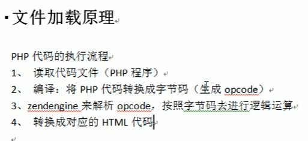
创建文件
fopen()函数创建文件
fopen() 函数也用于创建文件
在 PHP 中，创建文件所用的函数与打开文件的相同。
如果用 fopen() 打开并不存在的文件，此函数会创建文件
语法：fopen(“[文件名称]”，”[打开方式]”)
$buildfile = fopen("text.txt","w");打开方式：
模式 描述 r 只读。在文件的开头开始。 r+ 读/写。在文件的开头开始。 w 只写。打开并清空文件的内容；如果文件不存在，则创建新文件。 w+ 读/写。打开并清空文件的内容；如果文件不存在，则创建新文件。 a 追加。打开并向文件末尾进行写操作，如果文件不存在，则创建新文件。 a+ 读/追加。通过向文件末尾写内容，来保持文件内容。 x 只写。创建新文件。如果文件已存在，则返回 FALSE 和一个错误。 x+ 读/写。创建新文件。如果文件已存在，则返回 FALSE 和一个错误。
fclose()函数关闭文件
同之前版本的python ，php 操作文件后也需要关闭操作
与创建文件命令同时使用
$buildfile = fopen("text","w"); fclose($bulidfile);
feof()函数检测是否达到文件末尾
feof() 函数检测是否已到达文件末尾（EOF）。
在循环遍历未知长度的数据时，feof() 函数很有用。
在 w 、a 和 x 模式下，无法读取打开的文件！
if（feof($buildfile)） echo "文件已到结束";
fgets()函数逐行读取文件
fgets() 函数用于从文件中逐行读取文件。
<?php $file = fopen("welcome.txt", "r") or exit("无法打开文件!"); // 读取文件每一行，直到文件结尾 while(!feof($file)) { echo fgets($file). "<br>"; } fclose($file); ?>
fgetc()函数逐字符读取文件
fgetc() 函数用于从文件中逐字符地读取文件。
<?php $file=fopen("welcome.txt","r") or exit("无法打开文件!"); while (!feof($file)) { echo fgetc($file); } fclose($file); ?>
fwrite()函数写入文件
fwrite() 的第一个参数包含要写入的文件的文件名，第二个参数是被写的字符串。
语法：
fwrite(“text.txt”,”hello world!”)
<?php $buildfile = fopen("text.txt","w") or exit("创建文件失败"); $txt = "Hello World!\n"; fwrite($buildfile,$txt); fclose($buildfile); ?>当文件中原本就有内容新写入的内容将会覆盖原来的内容
file_put_contents()函数将字符串写入文件
- 如果设置了 FILE_USE_INCLUDE_PATH，那么将检查 filename 副本的内置路径
- 如果文件不存在，将创建一个文件
- 打开文件
- 如果设置了 LOCK_EX，那么将锁定文件
- 如果设置了 FILE_APPEND，那么将移至文件末尾。否则，将会清除文件的内容
- 向文件中写入数据
- 关闭文件并对所有文件解锁
如果成功，该函数将返回写入文件中的字符数。如果失败，则返回 False。
语法：
file_put_contents(“文件名/路径”,”字符串/数据”)
file_get_contents()函数获取文件内容
语法：
fille_get_contents(‘文件名’);
函数创建
- function方法
自定义函数
echo “My name is “;
语法：
function 函数名
{
//要执行的代码
}
自定义函数调用示例：
writeName();
?>
输出结果：My name is Atmujie
内置函数解析
json函数
json_encode 对变量进行json编码 json_decode 对json格式的字符串进行解码，转换为php变量 json_last_error 返回最后发生的错误 在函数中返回一个数组时，要用json函数
<?php function abc() { $a = array('aa'=>1,'bb'=>2); return json_encode($a); } abc(); //结果{"aa":1,"bb":2}
assert()函数检查表达式是否成立
php中assert函数用来检查表达式是否成立，返回ture or flase
主要用来debug（调试）
语法：assert(mixed[类型说明] $assertion[断言])
如果
assertion是字符串，它将会被 assert() 当做 PHP 代码来执行。assertion断言。在PHP 5中，它必须是要评估的字符串或要测试的布尔值。在PHP 7中，这也可以是任何返回值的表达式，该表达式将被执行并将结果用于指示断言是成功还是失败。
description如果
assertion失败了，选项 description 将会包括在失败信息里。exception在PHP 7中，第二个参数可以是 Throwable对象，而不是描述性 字符串，在这种情况下，这是断言失败并且 启用assert.exception配置指令时将抛出的对象 。
isset()函数
isset 译为：弹出
功能：检测变量是否已设置并且非null
语法：isset($var,$…=?)
$var:要检查的变量
如果
var存在并且值不是null则返回 **true**，否则返回 **false**。<?php $a = array ('test' => 1, 'hello' => NULL, 'pie' => array('a' => 'apple')); var_dump(isset($a['test'])); // TRUE var_dump(isset($a['foo'])); // FALSE var_dump(isset($a['hello'])); // FALSE // 键 'hello' 的值等于 NULL，所以被认为是未置值的。 // 如果想检测 NULL 键值，可以试试下边的方法。 var_dump(array_key_exists('hello', $a)); // TRUE // Checking deeper array values var_dump(isset($a['pie']['a'])); // TRUE var_dump(isset($a['pie']['b'])); // FALSE var_dump(isset($a['cake']['a']['b'])); // FALSE ?>
highlight_file()函数
对文件进行语法高亮显示
high高的，light光 highlight高亮
语法：highlight_file(filename,return)
filename:必须，要进行高亮处理的路径
return:可选，如果为trun 则返回高亮处理的代码
dirname()函数
返回路径中的目录部分
dirname 译为：文件名
语法：
dirname(filename)
filename:必要，文件路径
array()函数
创建一个数组
语法：$a = array();举例：
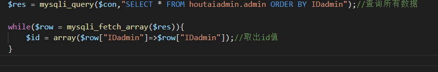
count()函数
返回数组长度
语法：$b = count($a);
serialize()函数
将指定的字符串进行序列化
exit()函数
输出一条消息，并退出当前脚本
语法：exit(status)
status:必须，规定退出脚本之前写入的消息或状态号。状态号不会被写入输出。如果 status 是字符串，则该函数会在退出前输出字符串。
如果 status 是整数，这个值会被用作退出状态。退出状态的值在 0 至 254 之间。退出状态 255 由 PHP 保留，不会被使用。状态 0 用于成功地终止程序。
mb_substr()函数用于获取一部分字符串
语法：
mb_substr ( string【要提取的字符串】 , int【开始位置】 , int
$length= NULL , string$encoding=【字符串编码】)结果为string
$length表示读取的字符串个数，省略或传入NULL则提取到尾部
不就是mysql的substr()语句
mb_strpos()函数用于查找字符串在另一个字符串中首次出现的位置
语法：
mb_strpos ( string (要检查的字符串), string （要查找的字符串） , int
$offset= 0 , string$encoding= 【字符串编码 )$offset搜索位置的偏移。如果没有提供该参数，将会使用 0。负数的 offset 会从字符串尾部开始统计。
结果为int
header()函数向客户端发送原始的 HTTP 报头。
语法：header(string,replace,http_response_code)
参数 描述 string 必需。规定要发送的报头字符串。 replace 可选。指示该报头是否替换之前的报头，或添加第二个报头。默认是 true（替换）。false（允许相同类型的多个报头）。 http_response_code 可选。把 HTTP 响应代码强制为指定的值。（PHP 4 以及更高版本可用）
实现页面跳转
header(Location: url); location 译为：位置
get_class()函数返回对象的类名
语法：get_class ( object
$object=null) : string返回对象实例
object所属类的名字。
strpos()函数查找字符串在另一字符串中最后一次出现的位置
strpos()函数对大小写敏感
strrpos(string,find,start) //string：要搜索的字符串 //find:要查找的字符串 //start:可选，从何处搜索返回字符串在另一字符串中最后一次出现的位置，如果没有找到字符串则返回 FALSE。
require()与require_once()&&include() 与include_once()包含文件
三者都是包含文件
include()【包含】 读入指定文件并执行其中的程序
require()【请求】会将目标文件的内容读入，并且把自己本身代换成这些读入的内容；
include_once() 【包含一次】 和 include 语句类似，唯一区别是如果该文件中已经被包含过，则不会再次包含。如同此语句名字暗示的那样，只会包含一次；
require()【请求一次】 和 require 语句完全相同，唯一区别是 PHP 会检查该文件是否已经被包含过，如果是则不会再次包含
区别
require() 语句的性能与 include() 相类似，都是包括并运行指定文件。不同之处在于：对 include() 语句来说，在执行文件时每次都要进行读取和评估；而对于 require() 来说，文件只处理一次（实际上，文件内容替换 require() 语句）。
简单来说，include包含文件时的运行步骤是先运行被包含的文件，然后将结果带入自身代码中执行
require不同，reauire是先把被包含文件的整个代码放入自身文件，再运行自身放入代码后的文件
就是先执行和先包含的关系
这就意味着如果可能执行多次的代码，则使用 require() 效率比较高。另外一方面，如果每次执行代码时是读取不同的文件，或者有通过一组文件迭代的循环，就使用 include() 语句。
time()函数返回当前时间戳，并格式化为日期：
<?php $t=time(); echo($t . "<br>"); echo(date("Y-m-d",$t)); ?> //1621153043 //2021-05-16
mail()函数 发送电子邮件
mail() 函数允许您从脚本中直接发送电子邮件。
如果电子邮件的投递被成功地接受，则返回 TRUE，否则返回 FALSE。
语法
mail(to,subject,message,headers,parameters)
| 参数 | 描述 |
|---|---|
| to | 必需。规定电子邮件的接收者。 |
| subject | 必需。规定电子邮件的主题。注释：该参数不能包含任何换行字符。 |
| message | 必需。定义要发送的消息。用 LF（\n）将每一行分开。行不应超过70个字符。Windows 注释：当 PHP 直接连接到 SMTP 服务器时，如果在消息的某行开头发现一个句号，则会被删掉。要解决这个问题，请将单个句号替换成两个句号： |
| headers | 可选。规定额外的报头，比如 From、Cc 和 Bcc。附加标头应该用 CRLF（\r\n）分开。注释：发送电子邮件时，它必须包含一个 From 标头。可通过该参数进行设置或在 php.ini 文件中进行设置。 |
| parameters | 可选。规定 sendmail 程序的额外参数（在 sendmail_path 配置设置中定义）。例如：当 sendmail 和 -f sendmail 的选项一起使用时，sendmail 可用于设置发件人地址。 |
substr_count() 子序列计数
substr_count()函数用于计数某些字符在整个字符串中出现的个数
语法
substr_count(string,substring,start,length)
| 参数 | 描述 |
|---|---|
| string | 必需。规定被检查的字符串。 |
| substring | 必需。规定要搜索的字符串。 |
| start | 可选。规定在字符串中何处开始搜索。 |
| length | 可选。规定搜索的长度。 |
注释：子串是区分大小写的。
注释：该函数不计数重叠的子串（参见例子 2）。
注释：如果 start 参数加上 length 参数大于字符串长度，则该函数生成一个警告（参见例子 3）。
例一
<?php
$a = 'abcdaabcaabaa';
$b = substr_count($a,"a");
echo $b;
# 7
例二
<?php
$a = 'abcabca';
$b = substr_count($a,"abca");
echo $b;
# 1
例三
<?php
$a = 'aa';
$b = substr_count($a,"a",4,10);
echo $b;
# Warning: substr_count(): Offset not contained in string in D:\phpstudy_pro\WWW\1.php on line 3
魔术函数
__sleep()函数
sleep 英译：睡觉
执行serialize()时，先会调用这个函数
如果存在，则该方法会优先被调用，然后才执行序列化操作。
相当于一个过滤器
必须定义返回值class Person { public $sex; public $name; public $age; public function __construct($name="", $age=25, $sex='男') { $this->name = $name; $this->age = $age; $this->sex = $sex; } /** * @return array */ public function __sleep() { echo "当在类外部使用serialize()时会调用这里的__sleep()方法 "; $this->name = base64_encode($this->name); return array('name', 'age'); // 这里必须返回一个数值，里边的元素表示返回的属性名称 } } $person = new Person('小明'); // 初始赋值 echo serialize($person); echo ' ';返回name和age，过滤了sex
返回结果：
当在类外部使用serialize()时会调用这里的__sleep()方法
O:6:”Person”:2:{s:4:”name”;s:8:”5bCP5piO”;s:3:”age”;i:25;}
__construct()函数
construct 译为：建造，构造、
当类实例化一个对象时，constaruct函数将自动调用
语法：
class a{ public $name,$sex,$age; public function __construct(){ $this->shu(); } public function shu(){ echo $this->name='Atmujie'; echo $this->sex="男"; echo $this->age="19"; } } $new = new a;jiang
__wakeup()函数
英译：醒醒
wakeup函数与sleep函数相对
如何有unserialize()函数进行反序列化，则先执行这个函数class Person { public $sex; public $name; public $age; public function __construct($name="", $age=25, $sex='男') { $this->name = $name; $this->age = $age; $this->sex = $sex; } /** * @return array */ public function __sleep() { echo "当在类外部使用serialize()时会调用这里的__sleep()方法 "; $this->name = base64_encode($this->name); return array('name', 'age'); // 这里必须返回一个数值，里边的元素表示返回的属性名称 } /** * __wakeup */ public function __wakeup() { echo "当在类外部使用unserialize()时会调用这里的__wakeup()方法 "; $this->name = 2; $this->sex = '男'; // 这里不需要返回数组 } } $person = new Person('小明'); // 初始赋值 var_dump(serialize($person)); var_dump(unserialize(serialize($person)));wakeup重新定义了name的值，无需返回
运行结果：
当在类外部使用serialize()时会调用这里的__sleep()方法
string(58) “O:6:”Person”:2:{s:4:”name”;s:8:”5bCP5piO”;s:3:”age”;i:25;}” 当在类外部使用serialize()时会调用这里的__sleep()方法
当在类外部使用unserialize()时会调用这里的__wakeup()方法
object(Person)#2 (3) { [“sex”]=> string(3) “男” [“name”]=> int(2) [“age”]=> int(25) }
__invoke()函数
当尝试以调用函数的方式调用一个对象时，__invoke() 方法会被自动调用。
class Person { public $sex; public $name; public $age; public function __construct($name="", $age=25, $sex='男') { $this->name = $name; $this->age = $age; $this->sex = $sex; } public function __invoke() { echo '这可是一个对象哦'; } } $person = new Person('小明'); // 初始赋值 $person();//类不是函数，不能以这种方式输出，应使用 echo $person; //结果：这可是一个对象哦 //如果没有__invoke(),仍当方法使用，就会报错
__toString()函数
可以用来返回表示对象的字符串信息，一旦定义，打印命令将调用它并打印出返回的字符串。
__toString() 方法用于一个类被当成字符串时应怎样回应。例如
echo $obj;应该显示些什么。当类被当作字符串执行时使用
__set()函数
给一个未定义的变量赋值时触发
__call()函数
试着调用一个对象中不存在或被权限控制中的方法，__call 方法将会被自动调用。
__get()函数
在 php 面向对象编程中，类的成员属性被设定为 private 后，如果我们试图在外面调用它则会出现“不能访问某个私有属性”的错误。那么为了解决这个问题，我们可以使用魔术方法 __get()。
在程序运行过程中，通过它可以在对象的外部获取私有成员属性的值。
class Person { private $name; private $age; function __construct($name="", $age=1) { $this->name = $name; $this->age = $age; } /** * 在类中添加__get()方法，在直接获取属性值时自动调用一次，以属性名作为参数传入并处理 * @param $propertyName * * @return int */ public function __get($propertyName) { if ($propertyName == "age") { if ($this->age > 30) { return $this->age - 10; } else { return $this->$propertyName; } } else { return $this->$propertyName; } } } $Person = new Person("小明", 60); // 通过Person类实例化的对象，并通过构造方法为属性赋初值 echo "姓名：" . $Person->name . "<br/>"; // 直接访问私有属性name，自动调用了__get()方法可以间接获取 echo "年龄：" . $Person->age . "<br/>"; // 自动调用了__get()方法，根据对象本身的情况会返回不同的 //姓名：小明 //年龄：50
魔术常量
FILE常量
__FILE__//返回当前文件的绝对路径
结果如：D:\www\1.phpdirname(__FILE__)//返回当前文件的上一级目录
结果如：D:\www
返回更上级可写为：dirname(dirname(__FILE__))
超全局变量
$GLOBALS
$GLOBALS — 引用全局作用域中可用的全部变量
例如：
<?php
function test() {
$foo = "local variable";
echo '$foo in global scope: ' . $GLOBALS["foo"] . "\n";
echo '$foo in current scope: ' . $foo . "\n";
}
$foo = "Example content";
test();
?>
其在脚本的所有作用域中都是可用的。不需要在函数或方法中用 global $variable; 来访问它。
$_SESSION[ ]
Session的中文是会话的意思，在Web编程中Session代表服务器与客户端之间的“会话”，意思是服务器与客户端在不断的交流。
在PHP中，使用$_SESSION[]可以存储特定用户的Session信息。并且每个用户的Session信息都是不同的。
当用户请求网站中任意一个页面时，若用户未建立Session对象，则服务器会自动为用户创建一个Session对象，它包含唯一的SessionID和其他Session变量，并保存在服务器内存中，不同用户的Session对象存着各自指定的信息。
session_start(); //开启Session功能
session_id();//获取用户Session ID值，如需修改在括号中传值即可
例如：**$_SESSION[‘id’] = $id**
意为将用户的id赋值给变量$id
$_SERVER
servers是一个包含了诸如头信息(header)、路径(path)、以及脚本位置(script locations)等等信息的数组。这个数组中的项目由 Web 服务器创建。
以下摘自官方文档
目录
在 $_SERVER 中，你也许能够，也许不能够找到下面的这些元素。注意，如果以命令行方式运行 PHP，下面列出的元素几乎没有有效的(或是没有任何实际意义的)。
‘PHP_SELF’
当前执行脚本的文件名，与 document root 有关。例如，在地址为 http://example.com/foo/bar.php 的脚本中使用 $_SERVER[‘PHP_SELF’] 将得到 /foo/bar.php。FILE 常量包含当前(例如包含)文件的完整路径和文件名。 如果 PHP 以命令行模式运行，这个变量将包含脚本名。
‘argv‘
传递给该脚本的参数的数组。当脚本以命令行方式运行时，argv 变量传递给程序 C 语言样式的命令行参数。当通过 GET 方式调用时，该变量包含query string。
‘argc‘
包含命令行模式下传递给该脚本的参数的数目(如果运行在命令行模式下)。
‘GATEWAY_INTERFACE’
服务器使用的 CGI 规范的版本；例如，“
CGI/1.1”。‘SERVER_ADDR’
当前运行脚本所在的服务器的 IP 地址。
‘SERVER_NAME’
当前运行脚本所在的服务器的主机名。如果脚本运行于虚拟主机中，该名称是由那个虚拟主机所设置的值决定。注意: 在 Apache 2 里，必须设置
UseCanonicalName = On和ServerName。 否则该值会由客户端提供，就有可能被伪造。 上下文有安全性要求的环境里，不应该依赖此值。‘SERVER_SOFTWARE’
服务器标识字符串，在响应请求时的头信息中给出。
‘SERVER_PROTOCOL’
请求页面时通信协议的名称和版本。例如，“HTTP/1.0”。
‘REQUEST_METHOD’
访问页面使用的请求方法；例如，“
GET”, “HEAD”，“POST”，“PUT”。注意:如果请求方法为HEAD，PHP 脚本将在发送 Header 头信息之后终止(这意味着在产生任何输出后，不再有输出缓冲)。‘REQUEST_TIME’
请求开始时的时间戳。
‘REQUEST_TIME_FLOAT’
请求开始时的时间戳，微秒级别的精准度。
‘QUERY_STRING’
query string（查询字符串），如果有的话，通过它进行页面访问。
‘DOCUMENT_ROOT’
当前运行脚本所在的文档根目录。在服务器配置文件中定义。
‘HTTP_ACCEPT’
当前请求头中
Accept:项的内容，如果存在的话。‘HTTP_ACCEPT_CHARSET’
当前请求头中
Accept-Charset:项的内容，如果存在的话。例如：“iso-8859-1,*,utf-8”。‘HTTP_ACCEPT_ENCODING’
当前请求头中
Accept-Encoding:项的内容，如果存在的话。例如：“gzip”。‘HTTP_ACCEPT_LANGUAGE’
当前请求头中
Accept-Language:项的内容，如果存在的话。例如：“en”。‘HTTP_CONNECTION’
当前请求头中
Connection:项的内容，如果存在的话。例如：“Keep-Alive”。‘HTTP_HOST’
当前请求头中
Host:项的内容，如果存在的话。‘HTTP_REFERER’
引导用户代理到当前页的前一页的地址（如果存在）。由 user agent 设置决定。并不是所有的用户代理都会设置该项，有的还提供了修改 HTTP_REFERER 的功能。简言之，该值并不可信。
‘HTTP_USER_AGENT’
当前请求头中
User-Agent:项的内容，如果存在的话。该字符串表明了访问该页面的用户代理的信息。一个典型的例子是：Mozilla/4.5 [en] (X11; U; Linux 2.2.9 i586)。除此之外，你可以通过 get_browser() 来使用该值，从而定制页面输出以便适应用户代理的性能。‘HTTPS’
如果脚本是通过 HTTPS 协议被访问，则被设为一个非空的值。
‘REMOTE_ADDR’
浏览当前页面的用户的 IP 地址。
‘REMOTE_HOST’
浏览当前页面的用户的主机名。DNS 反向解析不依赖于用户的 REMOTE_ADDR。注意: 你的服务器必须被配置以便产生这个变量。例如在 Apache 中，你需要在 httpd.conf 中设置
HostnameLookups On来产生它。参见 gethostbyaddr()。‘REMOTE_PORT’
用户机器上连接到 Web 服务器所使用的端口号。
‘REMOTE_USER’
经验证的用户
‘REDIRECT_REMOTE_USER’
验证的用户，如果请求已在内部重定向。
‘SCRIPT_FILENAME’
当前执行脚本的绝对路径。注意:如果在命令行界面（Command Line Interface, CLI）使用相对路径执行脚本，例如 file.php 或 ../file.php，那么 $_SERVER[‘SCRIPT_FILENAME’] 将包含用户指定的相对路径。
‘SERVER_ADMIN’
该值指明了 Apache 服务器配置文件中的 SERVER_ADMIN 参数。如果脚本运行在一个虚拟主机上，则该值是那个虚拟主机的值。
‘SERVER_PORT’
Web 服务器使用的端口。默认值为 “
80”。如果使用 SSL 安全连接，则这个值为用户设置的 HTTP 端口。注意: 在 Apache 2 里，为了获取真实物理端口，必须设置UseCanonicalName = On以及UseCanonicalPhysicalPort = On。 否则此值可能被伪造，不一定会返回真实端口值。 上下文有安全性要求的环境里，不应该依赖此值。‘SERVER_SIGNATURE’
包含了服务器版本和虚拟主机名的字符串。
‘PATH_TRANSLATED’
当前脚本所在文件系统（非文档根目录）的基本路径。这是在服务器进行虚拟到真实路径的映像后的结果。注意: Apache 2 用户可以在 httpd.conf 中设置
AcceptPathInfo = On来定义 PATH_INFO。‘SCRIPT_NAME’
包含当前脚本的路径。这在页面需要指向自己时非常有用。FILE 常量包含当前脚本(例如包含文件)的完整路径和文件名。
‘REQUEST_URI’
URI 用来指定要访问的页面。例如 “
/index.html”。‘PHP_AUTH_DIGEST’
当作为 Apache 模块运行时，进行 HTTP Digest 认证的过程中，此变量被设置成客户端发送的“Authorization” HTTP 头内容（以便作进一步的认证操作）。
‘PHP_AUTH_USER’
当 PHP 运行在 Apache 或 IIS（PHP 5 是 ISAPI）模块方式下，并且正在使用 HTTP 认证功能，这个变量便是用户输入的用户名。
‘PHP_AUTH_PW’
当 PHP 运行在 Apache 或 IIS（PHP 5 是 ISAPI）模块方式下，并且正在使用 HTTP 认证功能，这个变量便是用户输入的密码。
‘AUTH_TYPE’
当 PHP 运行在 Apache 模块方式下，并且正在使用 HTTP 认证功能，这个变量便是认证的类型。
‘PATH_INFO’
包含由客户端提供的、跟在真实脚本名称之后并且在查询语句（query string）之前的路径信息，如果存在的话。例如，如果当前脚本是通过 URL http://www.example.com/php/path_info.php/some/stuff?foo=bar 被访问，那么 $_SERVER[‘PATH_INFO’] 将包含
/some/stuff。‘ORIG_PATH_INFO’
在被 PHP 处理之前，“PATH_INFO” 的原始版本。
<?php
$indicesServer = array('PHP_SELF',
'argv',
'argc',
'GATEWAY_INTERFACE',
'SERVER_ADDR',
'SERVER_NAME',
'SERVER_SOFTWARE',
'SERVER_PROTOCOL',
'REQUEST_METHOD',
'REQUEST_TIME',
'REQUEST_TIME_FLOAT',
'QUERY_STRING',
'DOCUMENT_ROOT',
'HTTP_ACCEPT',
'HTTP_ACCEPT_CHARSET',
'HTTP_ACCEPT_ENCODING',
'HTTP_ACCEPT_LANGUAGE',
'HTTP_CONNECTION',
'HTTP_HOST',
'HTTP_REFERER',
'HTTP_USER_AGENT',
'HTTPS',
'REMOTE_ADDR',
'REMOTE_HOST',
'REMOTE_PORT',
'REMOTE_USER',
'REDIRECT_REMOTE_USER',
'SCRIPT_FILENAME',
'SERVER_ADMIN',
'SERVER_PORT',
'SERVER_SIGNATURE',
'PATH_TRANSLATED',
'SCRIPT_NAME',
'REQUEST_URI',
'PHP_AUTH_DIGEST',
'PHP_AUTH_USER',
'PHP_AUTH_PW',
'AUTH_TYPE',
'PATH_INFO',
'ORIG_PATH_INFO') ;
echo '<table cellpadding="10">' ;
foreach ($indicesServer as $arg) { //遍历数组
if (isset($_SERVER[$arg])) {
echo '<tr><td>'.$arg.'</td><td>' . $_SERVER[$arg] . '</td></tr>' ;
}
else {
echo '<tr><td>'.$arg.'</td><td>-</td></tr>' ;
}
}
echo '</table>' ;
/*
That will give you the result of each variable like (if the file is server_indices.php at the root and Apache Web directory is in E:\web) :
PHP_SELF /server_indices.php
argv -
argc -
GATEWAY_INTERFACE CGI/1.1
SERVER_ADDR 127.0.0.1
SERVER_NAME localhost
SERVER_SOFTWARE Apache/2.2.22 (Win64) PHP/5.3.13
SERVER_PROTOCOL HTTP/1.1
REQUEST_METHOD GET
REQUEST_TIME 1361542579
REQUEST_TIME_FLOAT -
QUERY_STRING
DOCUMENT_ROOT E:/web/
HTTP_ACCEPT text/html,application/xhtml+xml,application/xml;q=0.9,*/*;q=0.8
HTTP_ACCEPT_CHARSET ISO-8859-1,utf-8;q=0.7,*;q=0.3
HTTP_ACCEPT_ENCODING gzip,deflate,sdch
HTTP_ACCEPT_LANGUAGE fr-FR,fr;q=0.8,en-US;q=0.6,en;q=0.4
HTTP_CONNECTION keep-alive
HTTP_HOST localhost
HTTP_REFERER http://localhost/
HTTP_USER_AGENT Mozilla/5.0 (Windows NT 6.1; WOW64) AppleWebKit/537.17 (KHTML, like Gecko) Chrome/24.0.1312.57 Safari/537.17
HTTPS -
REMOTE_ADDR 127.0.0.1
REMOTE_HOST -
REMOTE_PORT 65037
REMOTE_USER -
REDIRECT_REMOTE_USER -
SCRIPT_FILENAME E:/web/server_indices.php
SERVER_ADMIN myemail@personal.us
SERVER_PORT 80
SERVER_SIGNATURE
PATH_TRANSLATED -
SCRIPT_NAME /server_indices.php
REQUEST_URI /server_indices.php
PHP_AUTH_DIGEST -
PHP_AUTH_USER -
PHP_AUTH_PW -
AUTH_TYPE -
PATH_INFO -
ORIG_PATH_INFO -
*/
?>
$_files
$_FILES 是一个预定义的数组，用来获取通过 POST 方法上传文件的相关信息
如果为单个文件上传，那么 $_FILES 为二维数组；如果为多个文件上传，那么 $_FILES 为三维数组。
Array
(
[userfile] => Array
(
[name] => Screen Shot 2016-05-12 at 18.13.24.png
[type] => image/png
[tmp_name] => /private/var/tmp/phplVHp3W
[error] => 0
[size] => 344925
)
)
//单个文件
phpinfo()详解
disable_functions 禁用函数
为了安全,运维人员会禁用PHP的一些“危险”函数,将其写在php.ini配置文件中,就是我们所说的disable_functions了。
绕过方式分类
- 常规绕过：exec,shell_exec,system,passthru,popen,proc_open
- 利用环境变量LD_PRELOAD绕过(★)：mail,imap_mail,error_log,mb_send_mail
- 利用pcntl_exec绕过
- 利用imap_open函数任意命令执行(CVE-2018-19518)
- 利用系统组件window com绕过
- 利用Apache+mod_cgi+.htaccess绕过
- 利用ImageMagick漏洞绕过利用PHP7.4的FFI绕过
- 利用 ShellShock绕过(CVE-2014-6271)
- 蚁剑插件
不在此做讲解
script_filename 网站绝对路径
pgpinfo()中script_filename 说明网站所在的绝对路径
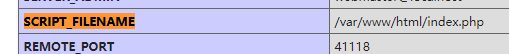
Protocols 支持的协议
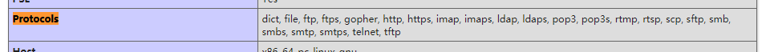
可以看到的有file://伪协议，Gopher信息查找系统（这个协议存在ssrf漏洞），telnet远程连接
server_addr ip地址泄露
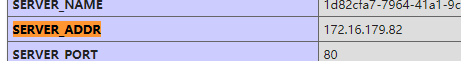
fastcgi 解析，命令执行，文件读取漏洞
查看是否开启fastcgi和fastcgi的版本，可能导致解析漏洞、远程命令执行、任意文件读取等问题
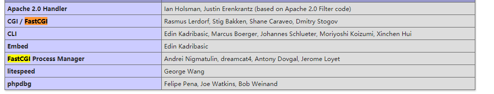
file 查看文件详情
其中file1会泄漏缓存文件地址
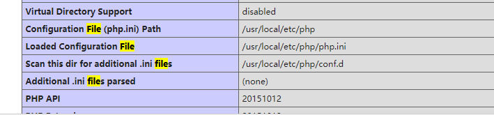
allow_url_include远程文件包含
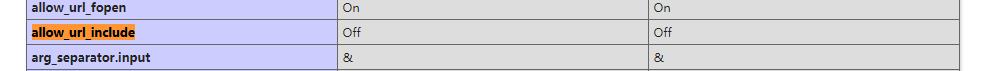
apache_log_dir 阿帕奇日志目录
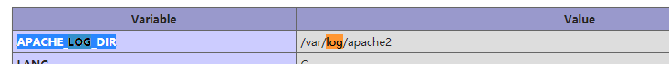
open_basedir 打开文件限制
将PHP所能打开的文件限制在指定的目录树中，包括文件本身。当程序要使用例如fopen()或file_get_contents()打开一个文件时，这个文件的位置将会被检查。当文件在指定的目录树之外，程序将拒绝打开。
设置方法
1.在php.ini 加入
open_basedir="指定目录"
2.在程序中使用
ini_set('open_basedir', '指定目录');
但不建议使用这种方法
3.在apache的httpd.conf中的Directory配置
php_admin_value open_basedir "指定目录"
httpd.conf中的VritualHost
php_admin_value open_basedir "指定目录"
4.nginx fastcgi.conf
fastcgi_param PHP_VALUE "open_basedir=指定目录"
一些敏感配置
allow_url_include、allow_url_fopen、disable_functions、open_basedir、short_open_tag等等
比如allow_url_include可用来远程文件包含、disable_functions用来查看禁用函数，绕过执行、查看是否开启open_basedir，用p牛的绕过open_basedir的方法有可能能读一些没权限的目录等等。
此外还能获取一些环境信息，比如Environment中的path、log等
封协议——伪协议：
PHP 带有很多内置 URL 风格的封装协议，可用于类似 fopen() 、 copy() 、 file_exists() 和 filesize() 的文件系统函数。 除了这些封装协议，还能通过 stream_wrapper_register() 来注册自定义的封装协议。
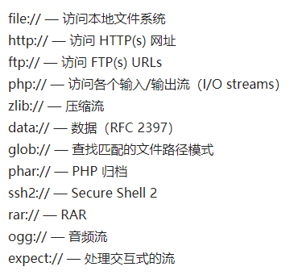
data://
语法：data:// — 数据（RFC 2397）
自 PHP 5.2.0 起 data:（» RFC 2397）数据流封装器开始有效。
格式：data://封装格式;编码格式,字符串
封装格式一般为
- text/html
- text/plain
- image/jpeg
等文件上传种常见的类型，表示将字符串封装为此格式的字节流
编码一般为base64
<?php
$jpegimage = imagecreatefromjpeg("data://image/jpeg;base64," . base64_encode($sql_result_array['imagedata']));
?>
<?php
echo file_get_contents('data://text/plain;base64,SSBsb3ZlIFBIUAo=');
//I love PHP
data伪协议只有在php<5.3且include=on时可以写木马。
file://
file:// — 访问本地文件系统
文件系统 是 PHP 使用的默认封装协议，展现了本地文件系统。 当指定了一个相对路径（不以/、、或 Windows 盘符开头的路径）提供的路径将基于当前的工作目录。 在很多情况下是脚本所在的目录，除非被修改了。 使用 CLI 的时候，目录默认是脚本被调用时所在的目录。
php5添加
格式：
file://文件绝对路径
<?php
echo file_get_contents('file://d:\phpstudy_pro\WWW\1\1.php');
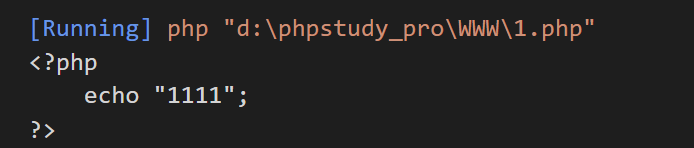
phar://
phar:// — PHP 归档
phar:// 数据流包装器自 PHP 5.3.0 起开始有效。详细的描述可参见 Phar 数据流包装器。
格式：phar://phar文件
phar文件伪造
<?php
class TestObject {
}
$phar = new Phar("phar.phar"); //后缀名必须为phar
$phar->startBuffering();
$phar->setStub("<?php __HALT_COMPILER(); ?>"); //设置stub
$o = new TestObject();
$o -> data='hu3sky';
$phar->setMetadata($o); //将自定义的meta-data存入manifest
$phar->addFromString("test.txt", "test"); //添加要压缩的文件
//签名自动计算
$phar->stopBuffering();
?>
phar的特征就是有 __HALT_COMPILER(); ?>格式的文件头
php://
php:// — 访问各个输入/输出流（I/O streams）
需要开启allow_url_fopen的：php://input、php://stdin、php://memory和php://temp
不需要开启allow_wrl_fopen的：php://filter
在CTF中经常使用的是php://filter和php://input
php://filter用于读取源码，php://input用于执行php代码
php://input需要post请求提交数据
php://filter可以get提交?a=php://filter/read=convert.base64-encode/resource=xxx.php
php协议可以用hackbar直接添加